C'est bientôt Noël les enfants, vous allez bientôt retrouver vos familles, récuperer vos cadeaux, faire les nerds et- Oh ? Mais qu'est-ce donc ? Mon Team Fortress 2™ se met a jour ! Ca m'a l'air gros en plus dites moi ! Vites, allons lire les patchnotes !
Updates to Team Fortress 2, Counter-Strike: Source, Day of Defeat: Source and Half-Life 2: Deathmatch have been released. The updates will be applied automatically when your Steam client is restarted. The major changes include:
Source Engine Changes (CS:S, DoD:S, TF2, HL2:DM)
Team Fortress 2
- Improved sv_pure:
- Materials / Models / Sounds / Animations are more comprehensively protected.
- Switched from CRC to MD5 hashes for stronger per-file validation.
- Fixed some issues between custom files and server whitelists over level changes.
- Added HL2:MP to the list of dedicated server games when starting a server via the Tools tab in the Library
- Added Medieval Mode, a game mode where players are restricted to using olde weapons.
- 'Your Eternal Reward' changes:
- Spies can now change their disguise weapon via 'lastdiguise' while using 'Your Eternal Reward'
- Already-disguised 'Your Eternal Reward' Spies are no longer forced to switch to displaying the melee weapon when they make a kill
- Spies no longer play speech lines when making a kill with 'Your Eternal Reward'
- Sentries no longer track 'Your Eternal Reward' Spies after they backstab someone
- 'Natascha' changes:
- Spin-up time increased.
- Slowdown-on-hit effect is reduced over distance.
- Added 'The Medi-eval Medic', 'The Hibernating Bear', and 'The Expert's Ordnance' item sets.
- Added new weapons: 'The Claidheamohmor', 'The Back Scratcher', 'The Boston Basher', 'The Fists of Steel', 'The Amputator', 'The Crusader's Crossbow', 'The Ullapool Caber', 'The Loch-n-Load', 'The Buffalo Steak Sandvich', 'The Brass Beast', 'The Warrior's Spirit', 'The Candy Cane', and 'The Jag'.
- Added 20 new hats.
- Added a prototype item testing map, and associated functionality, for contributors to test their work. Further details in an upcoming blog post.
- Spies can now see TargetID's of players and objects regardless of their own disguise status.
- Fixed some speech lines continuing after the speaker changes class
- The Spy 'Sap Auteur' achievement now increments in cases where the Spy was the assister in the building destruction.
- Fixed the arrow burning effect getting stuck on if you changed class in a respawn room with your arrow lit.
- Fixed a Flamethrower bug that allowed players to rapidly fake the Pyro's airblast effect.
- Throwing the Jarate or Milk now returns you to your previous weapon, instead of your Primary.
- Added leaderboard to track duel wins.
- Added ability for players to donate money directly to the creators of their favorite community maps.
- Increased backpack size by 100 slots.
Les changements du Source Engine, on s'en fout, que'est ce que nous reserve l'update pour TF2 ?
Un mode medieval, avec les 'olde' armes ? Géniaaaaaaaaal ! Ah non, en fait c'est simplement un mode ou le démo ne peut utiliser que son épée cheatée, le sniper que son arc de merde, le medic que son arbalete. Et d'autres conneries. Ouaiiiis... Bon, au moins y'a d'autres choses. Des changements de l'eternal Reward par example ! Maintenant, tout Spy avec le Saharian Set est totalement cheaté, j'aime. Natascha modifiée, elle ralentit moins ? J'aime ! Mais dites moi, ca a l'air d'être une bonne update tout ca !
Ah non.
Des nouveaux sets. Bon, même si ca déséquilibre pas mal le jeu les avantages de ces sets, c'est pas forcément grave, ca peut être des bonnes armes.
 The Claidheamohmor
The Claidheamohmor
Augmentation de la durée de la charge de 0.5 secondes
Pas de criticals aléatoires
15% de santé max pour le porteur
Obtention: Festive Winter Crate
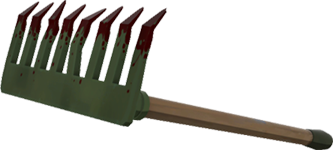The Backscratcher
+25% de dommages infligés
+50% de vie recuperée par les packs de vie
-75% de vitesse de soin
Obtention: Festive Winter Crate
Protip: Utile pour faire monter l'uber des medics tres vite.
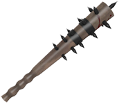The Boston Basher
Si cible touchée : Fait saigner pendant 5 secondes
Si cible ratée : Vous rollez un 2. Echec critique. Votre batte rate la cible et vous en perdez le contrôle. Vous perdez des points de vie et vous mettez a saigner profusément.
Obtention: ?
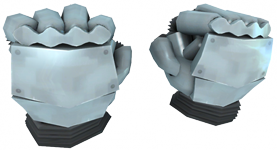The Fists of Steel
-60% de dommages infligés par les armes à distance.
+100% de dommages infligés par les armes de melée.
Obtention: Festive Winter Crate
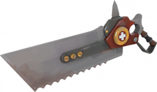The Amputator
Pendant un taunt: soigne les alliés proches
Obtention: Craft, Drop, Achat
Craft: Reclaimed Metal + Reclaimed Metal + Vita-Saw
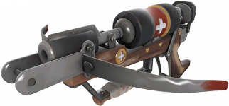The Crusader's Crossbow
Tire des carreaux spéciaux soignant les alliés/blessant les ennemis en fonction de la distance parcourue.
Pas de headshots
-75% de munitions
Munitions: 1/38
Obtention: Drop, Craft, Achat
Craft: Reclaimed Metal + Reclaimed Metal + Huntsman
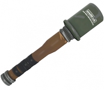The Ullapool Caber
Après un coup reussi, la tête de la grenade explose, infligeant 100 de dommage à tous les ennemis autour. Ensuite, les dommages ne sont plus que de 35 par coup
Après l'explosion, l'utilisateur est propulsé en l'air.
Lors de l'explosion, les HP de l'utilisateur se voient réduits de 100
Pas de criticals aléatoires; La grenade peut être "réparée" en passant devant un cabinet de soins
Obtention: Drop, Craft, Achat
Craft: Reclaimed Metal + Reclaimed Metal + Sandman
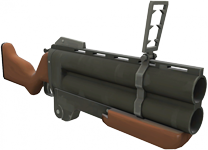The Loch'n'Load
+10% de dommages infligés.
+25% de vitesse du projectile
Chargeur réduit de 60%
Les pipes se détruisent au contact d'une surface autre qu'un joueur, sans infliger de dégats
+25 de dommages auto-infligés
Munitions: 2/16
Obtention: Craft, Drop, Achat
Craft: Reclaimed Metal + Reclaimed Metal + Scottish Resistance
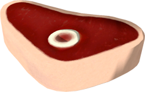The Buffalo Steak Sandvich
Lorsque sous les effets, la vitesse de mouvement est augmentée (+35%), tous les coups donnés sont des minicrits et vous êtes forcés d'utiliser les armes de melée.
Durée: 15 secondes
Temps de recharge: 25 secondes
Obtention: Drop, Craft, Achat
Craft: Crit-A-Cola + Sandvich
Protip: Lorsque les GRU sont équipés, la vitesse de mouvment est augmentée de 74%
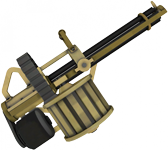The Brass Beast
+20% de dommages infligés
+50% de temps de spin up
-60% de vitesse pendant le tir
Obtention: Drop, Craft, Achat
Craft: Reclaimed Metal + Reclaimed Metal + Natascha
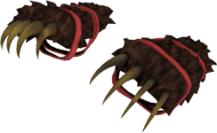The Warrior's Spirit
+30% de dommages infligés
-20 de vie pour le porteur
Obtention: Drop, Craft, Achat
Craft: Reclaimed Metal + Reclaimed Metal + GRU
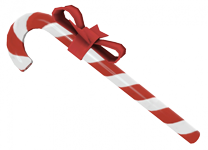The Candy Cane
Un petit pack de vie est droppé après un kill
+25% de vulnérabilité aux explosifs
Obtention: Festive Winter Crate
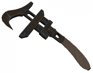The Jag
+30% de vitesse de construction
-25% de dommages infligés
Obtention: Festive Winter Crate
Tout ce petit monde, ça nous fait donc:
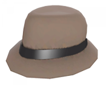 Flipped Trilby
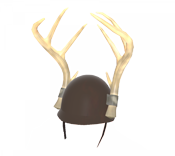 Exquisite Rack
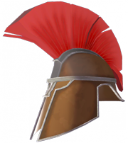 Defiant Spartan
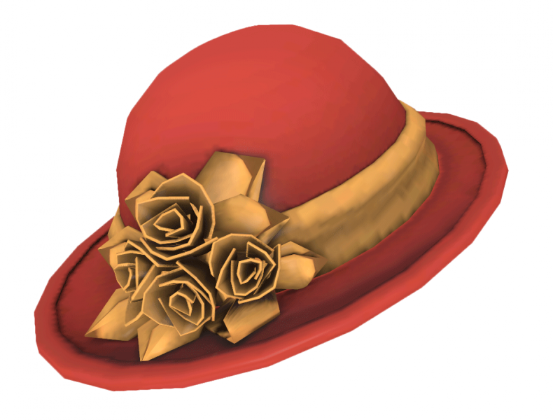 Madame Dixie
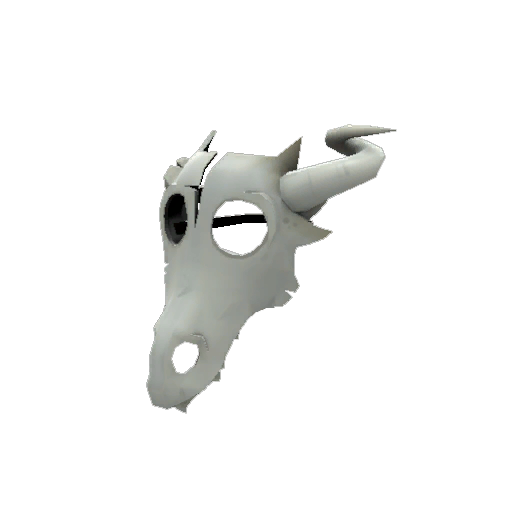 Pryomancer's Mask
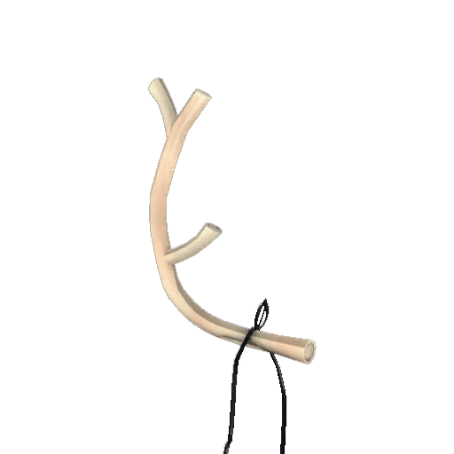 Prancer's Pride
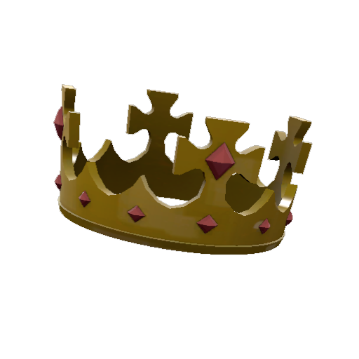 Prince Tavish's Crown
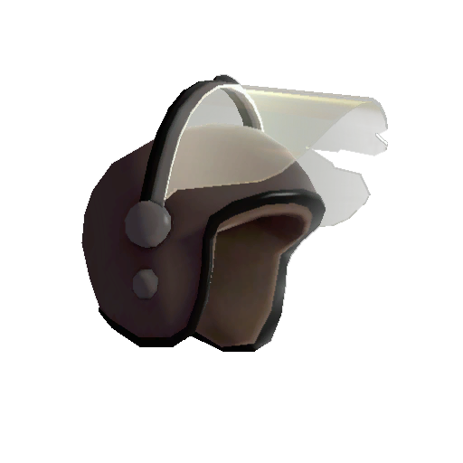 Scotch Bonnet
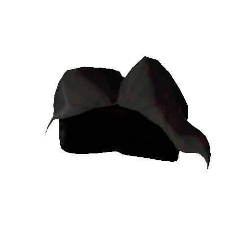 Coupe d'Isaster
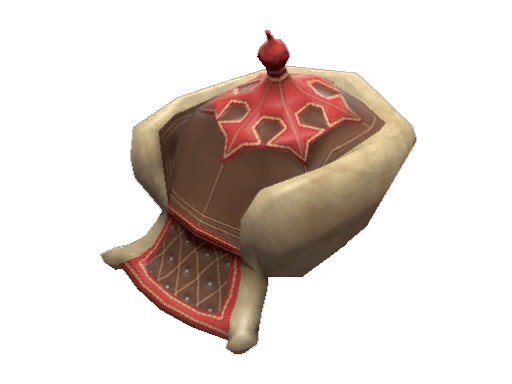 Magnificent Mongolian
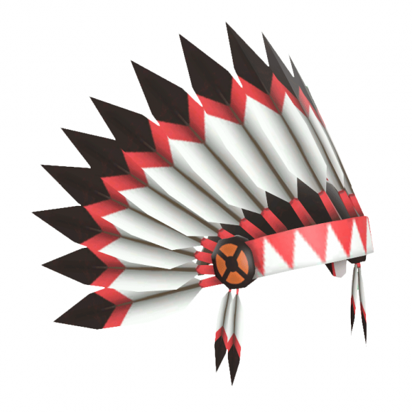 Big Chief
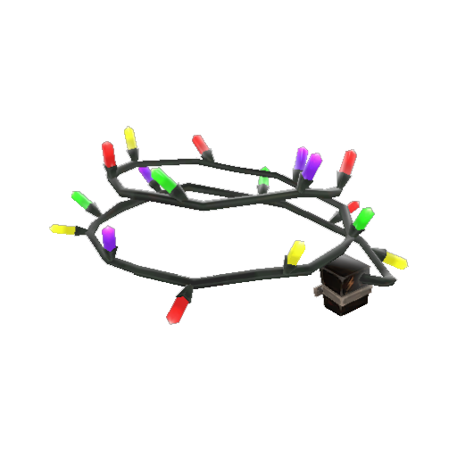 Industrial Festivizer
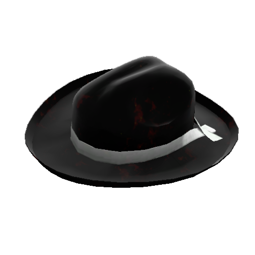 Buckaroo's Hat
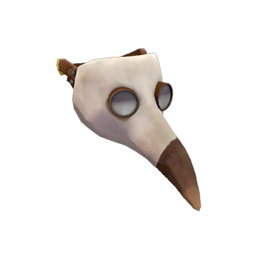 Blighted Beak
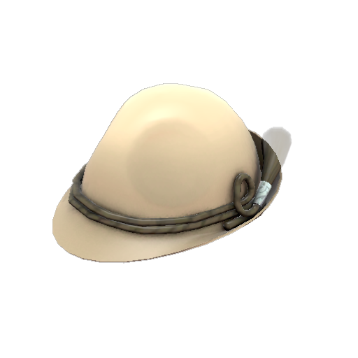 German Gonzila
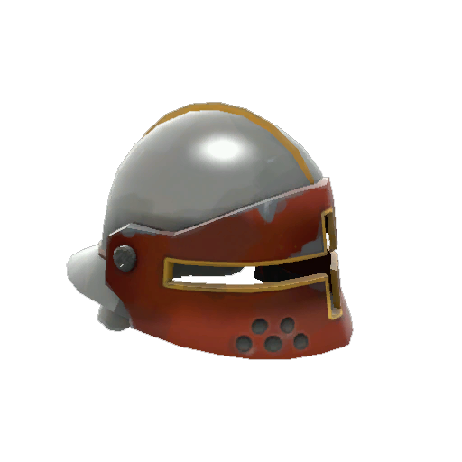 Berliner's Bucket Helm
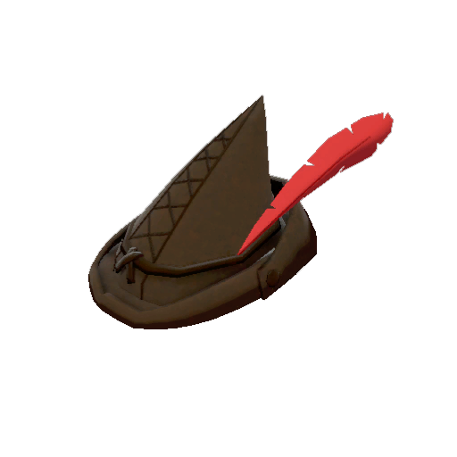 Larrikin Robin
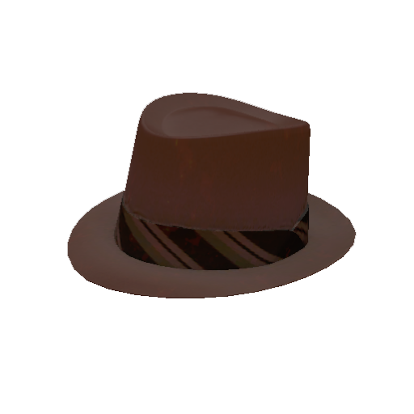 Detective Noir
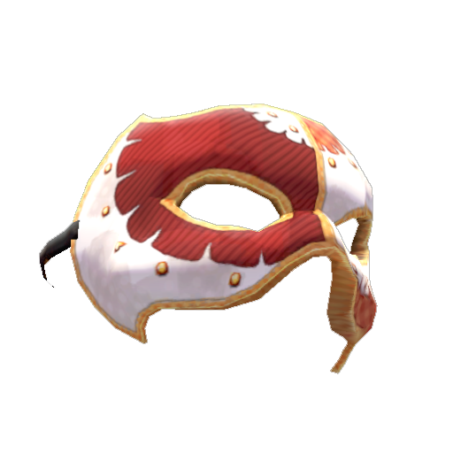 Le Party Phantom
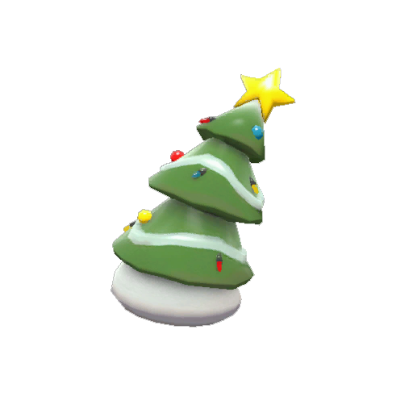 A Rather Festive Tree
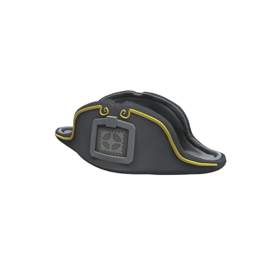 World Traverler's Hat
Sinon, je constate avec tristesse que le bug de l'airblast du pyro (aka sucagedefpsagrandcoupsdairblast) a été corrigé :(